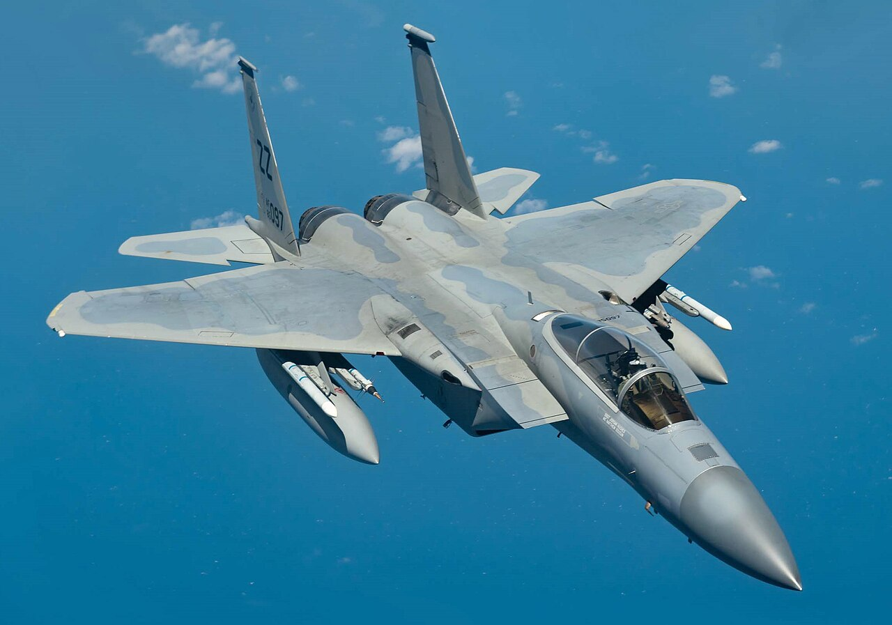
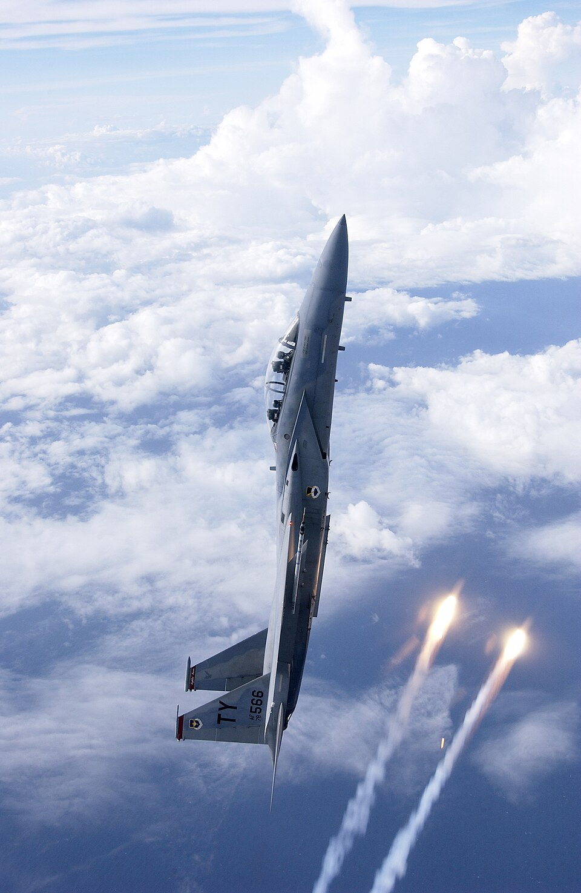
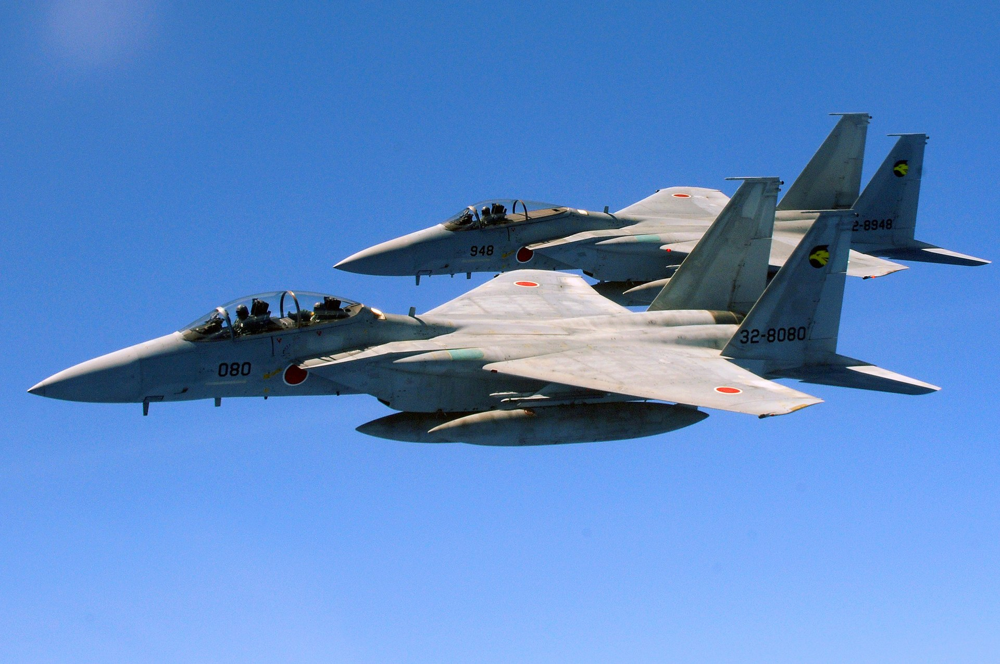
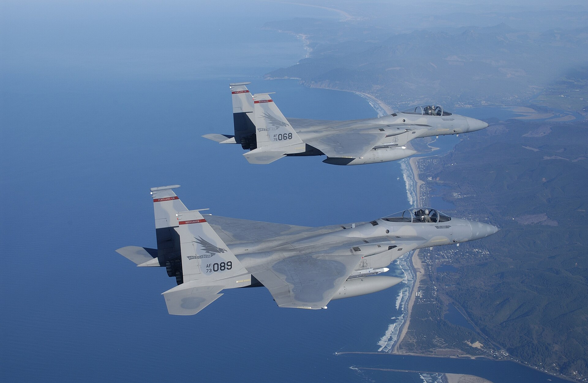
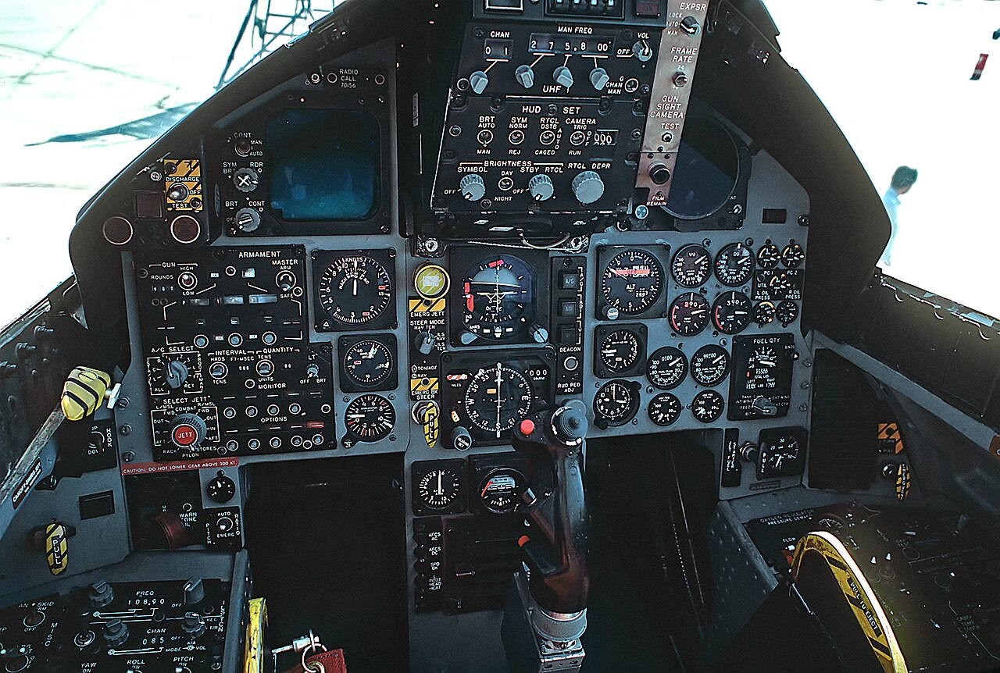
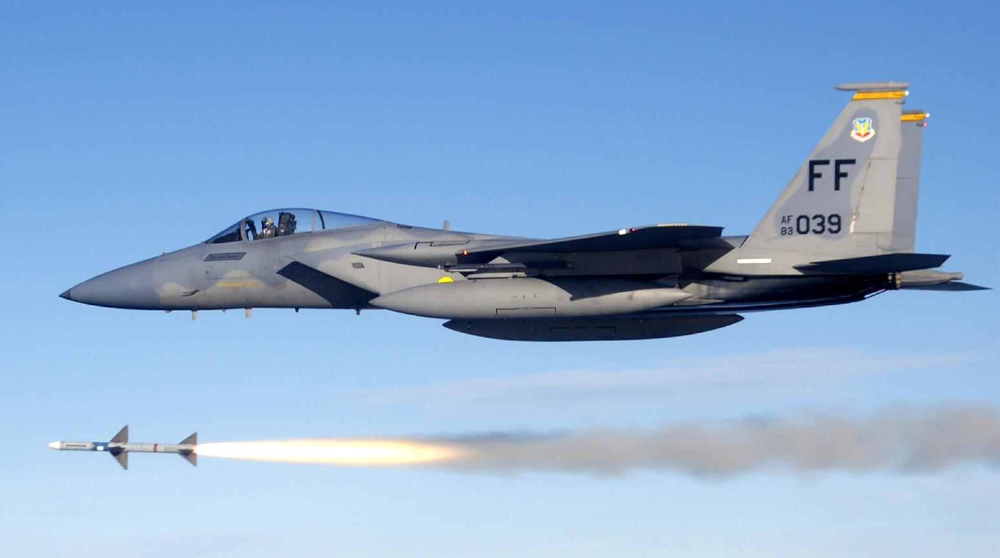
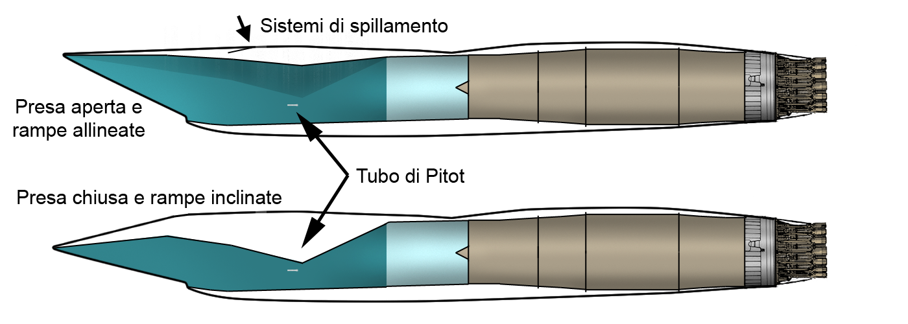

F-15E Strike Eagle da Força Aérea Israelense.

------------------------------------------------------------------------------------------------------------------------------------------------------------------------------------------------------------------------------------------------------------------------------------------------------------------------------------------------------------------
O McDonnell Douglas F-15 Eagle é um caça táctico altamente manobrável, que pode operar sob todas as condições atmosféricas.

A superioridade do Eagle é conseguida na destreza e aceleração, alcance, armamento e aviónica. O F-15 dispõe de sistemas eletrónicos e armamento para detectar, focar, perseguir e atacar aviões inimigos quer em espaço aéreo aliado ou inimigo. Os sistemas de armamento e controle de voo foram desenhados para que uma única pessoa possa realizar combate ar-ar com segurança e eficácia.
A aceleração e agilidade do F-15 são conseguidas através de dois motores de elevada potência e reduzida carga alar, fatores vitais na capacidade de manobra, permitindo elevada velocidade ascensorial, alto teto operacional, e capacidade superlativa de manutenção de curva sustentada, características favoráveis em combate em altas e médias altitudes.
O sistema aviónico multi-missão inclui um HUD (Head Up Display) que projeta ao nível dos olhos informações de voo, navegação, aproximação além de informes sintetizados do radar e IFF. Conta ainda com sistema de navegação inercial, instrumentos de voo, comunicações em VHF e UHF, sistema de combate tático, e sistema de aterragem por instrumentos. Também comporta um sistema de combate tático eletrônico, montado internamente, e um conjunto de contra-medidas eletrónicas e computador central.
O versátil sistema de radar de pulso Doppler permite a deteção de alvos a altitudes superiores e inferiores ao avião, sem a confusão observada pela paisagem. Consegue detetar e perseguir aviões e alvos de pequenas dimensões a grande velocidade, a distâncias além do alcance visual, e a altitudes superiores ao nível das árvores. O radar alimenta o computador central com informações sobre o alvo para uma entrega eficaz do armamento. Para lutas frente-a-frente, de curto alcance, o radar automaticamente foca o avião inimigo, sendo esta informação projetada no HUD. O sistema de guerra eletrónica do F-15 dispõe de aviso contra ameaça e contra-medidas automáticas contra ameaça. Devido à velocidade ascensorial e teto operacional encontrados no F-15, o avião foi batizado de "Nave de guerra das estrelas" por ter sido cogitado como plataforma secundária de armas para o programa Star Wars, (conhecido oficialmente como Strategic Defense Iniciative, durante o Governo Ronald Reagan.
A versatilidade do F-15 permite-lhe também carregar uma vasta variedade de armas ar-ar. O sistema bélico automatizado permite ao piloto realizar combates aéreos com segurança e eficácia, usando o HUD, a aviónica e os controlos do armamento localizados quer na manete do motor ou do controlador de navegação. Sempre que o piloto alterne entre sistemas de armamento será automaticamente visualizado no HUD o respetivo sistema de armas e solução de tiro.
O Eagle pode ser armado com combinações de quatro armas ar-ar: mísseis AIM-7F/M Sparrow, mísseis ar-ar AIM-120 AMRAAM avançados de alcance médio nos cantos inferiores da fuselagem, mísseis AIM-9L/M Sidewinder ou AIM-120 em dois suportes nas asas, e uma metralhadora interna 20 mm Gatling na asa direita.
O F-15 Eagle viu ação pela 1ª vez em 1977, quando em uma escaramuça fronteiriça, os Eagles israelenses abateram 4 MiG's Sírios; Já em 1982, sobre o vale do Bekaa no Líbano, os Eagle's enfrentaram a Força Aérea Síria com seus MiG-23 e MiG-25, que teoricamente eram semelhantes ao F-15A. Nos combates subsequentes, eles abateram 82 aviões sírios, com a perda de 1 F-15B (Israel diz que houve problemas na aterrissagem); em 1984, uma patrulha de F-15A da RSAF interceptou e abateu dois F-4E Phanton II Iranianos que violaram suas fronteiras; Já na Operação Tempestade no Deserto, de 1991, os F-15C Americanos e Sauditas obtiveram o maior número de abates da campanha, quando conseguiram o número de 37 aeronaves iraquianas abatidas sem perdas, ainda que os iraquianos aleguem que um MiG-25PD abateu um F-15C da USAF em 29 de janeiro de 1991; Destes, 30 foram com o AIM-7E3 Sparrow, 4 com AIM-9M Sidwinder e 3 com tiros de canhão de 20mm; nos anos posteriores a Guerra do Golfo, os F-15C abateram alguns aviões iraquianos, inclusive com a primeira utilização em combate do Hughes AIM-120 AMRAAM; Em 1999, aconteceu o primeiro combate BVR (fora do alcance visual) noturno, quando o Cel Cesar "Rico" Rodriguez abateu com seu F-15C um MiG-29A Fulcrum sérvio, durante a Operação Forças Aliadas.
------------------------------------------------------------------------------------------------------------------------------------------------------------------------------------------------------------------------------------------------------------------------------------------------------------------------------------------------------------------




------------------------------------------------------------------------------------------------------------------------------------------------------------------------------------------------------------------------------------------------------------------------------------------------------------------------------------------------------------------
Em 2000 o F-15, em todas as forças aéreas, agregou um recorde de baixas de 122 alvos abatidos contra zero perdidos no combate aéreo (um F-15J japonês atingiu outro F-15J em 1995 devido a um erro num AIM-9 Sidewinder durante treinos de combate aéreo com armas reais). O F-15E teve duas baixas provenientes de fogo antiaéreo no Guerra do Golfo em 1991, apesar de fontes iraquians dizerem que foi um MiG-25Pd o responsável por uma das baixas. Um F-15E foi abatido em 2003 na Invasão do Iraque provavelmente devido a fogo antiaéreo, outro em 2013, nos ataques a posições líbias durante a Primavera Árabe.
------------------------------------------------------------------------------------------------------------------------------------------------------------------------------------------------------------------------------------------------------------------------------------------------------------------------------------------------------------------

O F-15 Eagle viu ação pela 1ª vez em 1977, quando em uma escaramuça fronteiriça, os Eagles israelenses abateram 4 MiG's Sírios; Já em 1982, sobre o vale do Bekaa no Líbano, os Eagle's enfrentaram a Força Aérea Síria com seus MiG-23 e MiG-25, que teoricamente eram semelhantes ao F-15A. Nos combates subsequentes, eles abateram 82 aviões sírios, com a perda de 1 F-15B (Israel diz que houve problemas na aterrissagem); em 1984, uma patrulha de F-15A da RSAF interceptou e abateu dois F-4E Phanton II Iranianos que violaram suas fronteiras; Já na Operação Tempestade no Deserto, de 1991, os F-15C Americanos e Sauditas obtiveram o maior número de abates da campanha, quando conseguiram o número de 37 aeronaves iraquianas abatidas sem perdas, ainda que os iraquianos aleguem que um MiG-25PD abateu um F-15C da USAF em 29 de janeiro de 1991; Destes, 30 foram com o AIM-7E3 Sparrow, 4 com AIM-9M Sidwinder e 3 com tiros de canhão de 20mm; nos anos posteriores a Guerra do Golfo, os F-15C abateram alguns aviões iraquianos, inclusive com a primeira utilização em combate do Hughes AIM-120 AMRAAM; Em 1999, aconteceu o primeiro combate BVR (fora do alcance visual) noturno, quando o Cel Cesar "Rico" Rodriguez abateu com seu F-15C um MiG-29A Fulcrum sérvio, durante a Operação Forças Aliadas.
------------------------------------------------------------------------------------------------------------------------------------------------------------------------------------------------------------------------------------------------------------------------------------------------------------------------------------------------------------------
Previa-se que o modelo F-15C/D fosse ser substituído pelo F-22A Raptor, embora não se possa determinar o destino destes aviões. Devido às suas características de alta tecnologia é muito provável que se mantenha operacional durante bastante tempo ainda. Mas devido a cortes orçamentários dos EUA, o Raptor ficou limitado a exatos 199 exemplares, com a desativação absoluta da linha de produção deste. Desse modo, a USAF implementou um programa de modernização do Eagle, que agora é F-15C AESA, com essa novíssima e altamente eficiente tecnologia de radar eletrônico. Em março de 2009, a Boeing apresentou o novo F-15SE Silent Eagle. O primeiro voo foi marcado para 2010.
------------------------------------------------------------------------------------------------------------------------------------------------------------------------------------------------------------------------------------------------------------------------------------------------------------------------------------------------------------------
O Boeing F-15SE Silent Eagle é uma proposta de atualização do F-15E Strike Eagle da Boeing usando recursos de combate de quinta geração, tais como armas de transporte interno e material absorvente de radar.
Uma versão de demonstração da F-15SE foi exibido pela primeira vez pela Boeing, em 17 de março de 2009. O F-15SE usará tecnologias de combate de quinta geração para reduzir a sua seção transversal do radar (RCS). Características distintas desta versão são os tanques de combustível diminuídos para que as armas fiquem guardadas internamente e as caudas verticais inclinadas 15 graus para fora para reduzir a sua seção transversal de radar. Armazenamento de Armas toma a maior parte da capacidade de cada tanque de combustível. Esta variante também terá material absorvente de radar, quando necessário. O Silent Eagle servirá os países que já possuem o F-15, como Israel, Arábia Saudita, Japão e Coreia do Sul, entre outros.
O F-15SE tem um nível de stealth permitida para exportação pelo governo dos EUA. Pela frente está previsto por Ausairpower.net como, eventualmente, ser tão baixa quanto a versão de exportação do F-35 Lightning II. Para referência a secção transversal de radares da não exportação da versão do F-35 da frente é de 0,001 m² (0,011 ft²). A parte traseira e transversais de radar serão maiores. O F-15SE será Raytheon tem um radar (AESA), e um novo sistema de guerra eletrônica da BAE Systems.
Esta discrição será otimizado para missões ar para o ar e muito menos eficaz contra o chão com radares.
Em março de 2009, a Boeing lançou formalmente o F-15SE Silent Eagle e começou a oferecê-lo para as vendas internacionais. A aeronave é capaz de carregar armas, tanto interna e externa armas hardpoints montado sob cada asa. O F-15SE de menor custo em relação a caças de quinta geração é destinado ao auxílio de recurso da aeronave para o mercado de exportação. A aeronave iria exigir licenças de exportação semelhante ao F-35.
O custo unitário foi estimado pela Boeing em aproximadamente US$ 100 milhões, incluindo as peças sobressalentes e de apoio. A empresa tem buscado outras empresas para a partilha de risco parceiros para reduzir os seus custos de desenvolvimento. Estudos de diferentes níveis possíveis de redução seção transversal do radar (RCS) de redução estão em andamento. Em Junho de 2009, a Boeing afirmou que planeja para um voo de demonstração da Silent Eagle no terceiro trimestre de 2010.
Em Setembro de 2009, a Arábia Saudita considerou a compra de até 72 F-15 . Embora a variante não é especificado, são relatados para estar interessado no Silent Eagle.
------------------------------------------------------------------------------------------------------------------------------------------------------------------------------------------------------------------------------------------------------------------------------------------------------------------------------------------------------------------
Tripulação: 1 - piloto
Comprimento: 19,43 m (64 ft)
Envergadura: 13,05 m (43 ft)
Altura: 5,63 m (18 ft)
Área alar: 56,68 m² (610 ft²)
Peso vazio: 12 700 kg (28 000 lb)
Peso bruto (carregado): 20 200 kg (44 500 lb)
Peso de decolagem: 30 845 kg (68 000 lb)
Capacidade de combustível: 6 100 kg (13 400 lb) de combustível interno
Número de motores: 2x
Tipo do motor: Turbofan
Fabricante/modelo: Pratt & Whitney F100-100 ou PW F100-200
Empuxo por motor: 23 770 kgf (52 400 lbf) (105.7 kN)

Velocidade máxima: 2 665 km/h (1 660 mph)
Velocidade total em Mach: 2.5 Ma
Alcance: 5 550 km (3 450 mi)
Alcance bélico: 1 967 km (1 220 mi)
Razão de subida: 254 m/s
Tecto de serviço: 20 000 m (65 600 ft)
Força G: 9 G
Metralhadoras/canhões: 1x canhão M61 Vulcan de 20 mm (0,79 in)
Número de pontos de fixação (pilones): 11x
Capacidade dos pilones (kg): 7 300 kg (16 100 lb)
Bombas dos pilones: Mark 82, Mark 84, GBU-10 e GBU-31
Misseis nos pilones: 4x AIM-7 Sparrow, 4x AIM-9 Sidewinder e 8x AIM-120 AMRAAM
------------------------------------------------------------------------------------------------------------------------------------------------------------------------------------------------------------------------------------------------------------------------------------------------------------------------------------------------------------------
.svg.png)
F-15C
F-15D
F-15E
F-15EX
F-15J
F-15DJ
F-15I
F-15C
F-15D
------------------------------------------------------------------------------------------------------------------------------------------------------------------------------------------------------------------------------------------------------------------------------------------------------------------------------------------------------------------